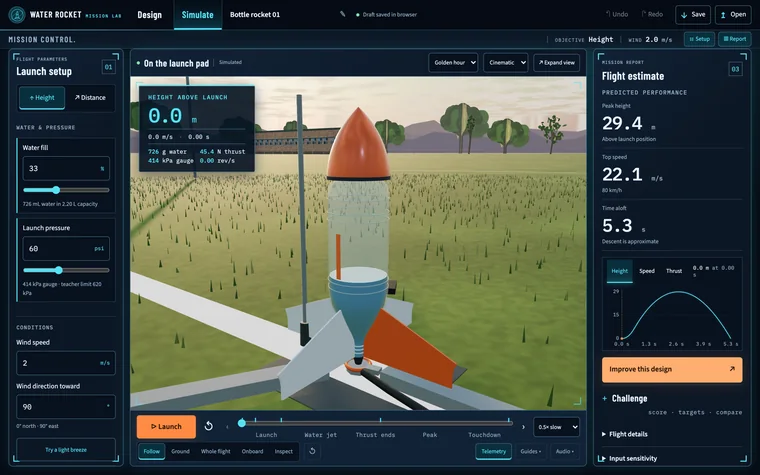
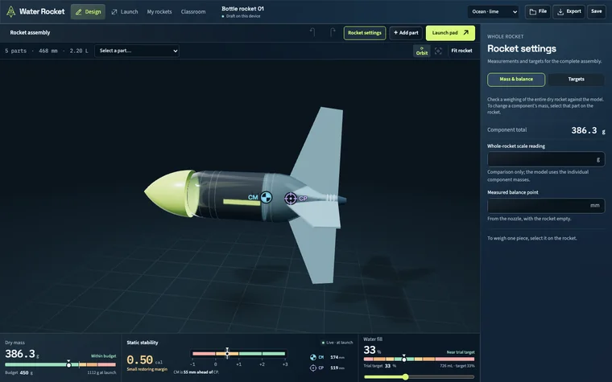
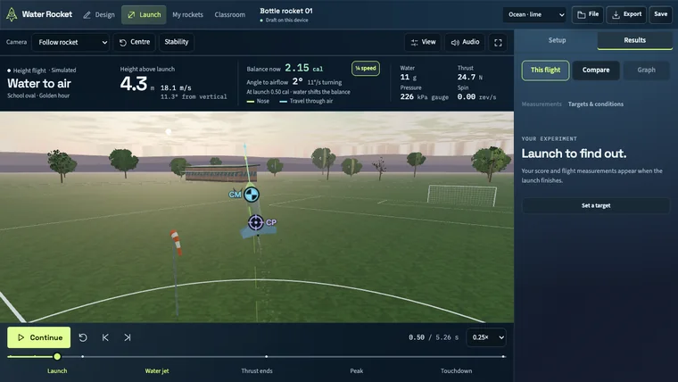
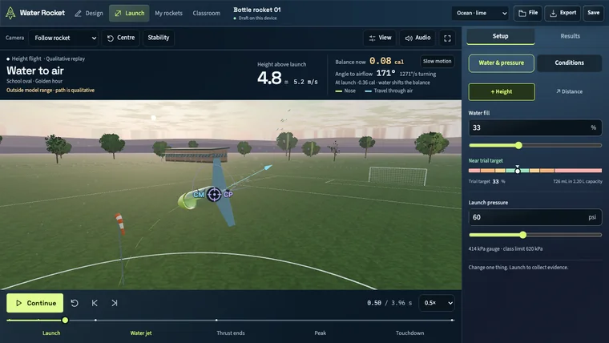
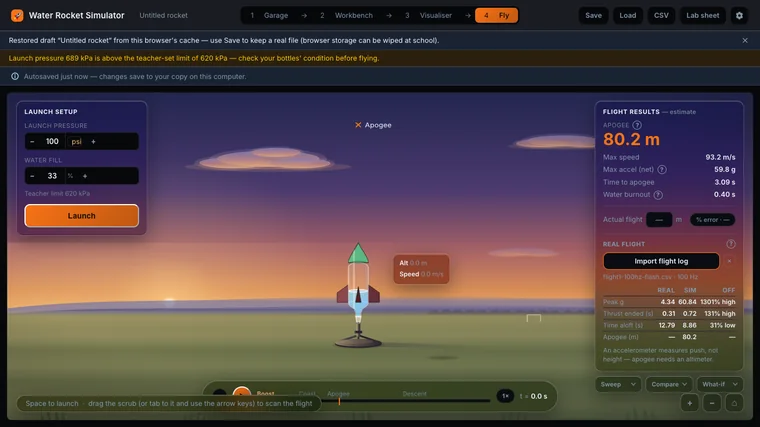

Water Rocket Lab
Students design a water rocket, predict how it will fly, then compare the prediction with the real launch.
No sign-in. Made-up sample data. Opens in a new tab.
Designed and built independently, outside my school roles. Demonstrations use made-up data and sample AI responses.


The classroom problem
Launch day is exciting, but students often learn little from it: they guess, launch and cheer. Predicting first turns the launch into an experiment.
What it does
- Build a rocket from parts, weigh the real parts, and check its stability: the balance point must sit ahead of the centre of pressure.
- Set the water and pressure, launch, and see the predicted height, speed and flight time.
- Replay the flight to see why a stable rocket flies straight and an unstable one tumbles.
- Record the real launch heights and compare them with the prediction.
How it was built
There is no AI inside the app. I designed it and built it with AI coding assistants, and its physics was checked against published flight data, with predictions within about ten per cent.
The teacher’s role: Set the launch settings, then use the real launch results to examine the prediction with students.
A closer look
Select a screenshot to see it in a larger view.







